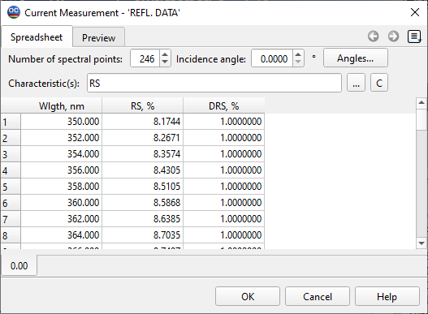

Modifying Measurements
This option allows you to modify the measurement data stored in memory.
Changes are applied to the data file in memory, leaving the corresponding database measurement data unaffected. The header of the editing window displays the words “Current Measurements.” You can restore the initial data file at any time by reloading it from the Measurements database. To make changes permanent, save the modified data file in the Measurements database using the Save Measurements… command from the Data menu.

The Apply Button and OK Button provide different functionalities for managing modifications:
Apply Button:
Allows users to apply modifications without closing the window. This is useful for making multiple adjustments in one session.
OK Button:
Applies the modifications and closes the window. This is ideal for users who are finished with their edits and want to exit the editing interface.
See also: